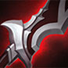

铭文：对局开始前的底子
在《王者荣耀》里，玩家最早做出的一次策略决策并不发生在对局中，而是发生在对局之前——配置铭文。铭文为英雄提供基础属性加成，覆盖攻击、法术、防御、移速、攻速、暴击、吸血等多个维度。它不是对局里买来的，而是开局就带在身上的，因此它决定的是英雄在 1 级时的初始战斗能力。
铭文的核心逻辑是「适配英雄定位」：法师通用页以法术攻击、法术穿透和冷却缩减为主；射手侧重攻速、暴击率与物理吸血；坦克堆最大生命值与物理防御；刺客与物理战士则强调物理攻击和物理穿透。一套配得合适的铭文带来的属性差，在开局的前几分钟的对线换血里相当明显——这正是同一名英雄在不同玩家手里手感不一样的原因之一。
一套铭文页通常包含 30 个槽位，红色、蓝色、绿色三类各 10 个，只能镶嵌对应颜色的铭文。游戏在 S22 赛季对铭文系统做过一次比较重要的优化：增加了英雄专属铭文页、铭文预览功能与铭文推荐系统，并简化了铭文的获取流程。对新手来说，系统推荐的通用铭文页已经够用；随着段位提升，为特定英雄单独定制铭文页会逐渐变成进阶的必经之路。
三类铭文各取一枚示例：
铭文速查
下面按属性用途整理了常见的铭文。
提供物理攻击与物理穿透，是物理系英雄最常见的一套起手铭文之一。
同样以物理攻击与物理穿透为主，常与「异变」搭配，构成物理输出英雄的通用页。
在物理攻击之外附加移动速度，适合需要频繁走位与支援的英雄。
以暴击率为主，配合暴击类装备使用，用来提高爆发上限。
攻速与暴击率兼顾，适合依赖普攻输出的物理英雄。
提供法术攻击力加成，是法师铭文页里最常见的红色铭文。
法术攻击与法术吸血兼顾，让法师在消耗中保持续航。
法术攻击搭配法术穿透，用来对抗出了法术防御的英雄。
在法术攻击之外提供冷却缩减，加快技能循环。
以冷却缩减为主，适合技能依赖度高的英雄压短技能间隔。
最大生命与冷却缩减兼顾，通用性很强，坦克与法师都能用。
攻速、最大生命与物理防御三项兼顾，适合需要站得住的前排英雄。
堆叠最大生命值，用来提升开局的抗压能力。
同时提供物理防御与法术防御，属于纯防守向的选择。
攻速与移动速度兼顾，是很多英雄提高游走效率的通用选择。
装备：六大类别与出装逻辑
装备系统是《王者荣耀》对局里最核心的动态策略系统。铭文是开局前定好的常量，装备则是每一次回城都要重新计算的变量。游戏内装备分为攻击、法术、防御、移动、打野和辅助六大类别，每类承载不同的战术价值。
- 攻击装备提供物理攻击、攻速与暴击属性，是射手与物理刺客的成长路径。
- 法术装备提供法术强度与冷却缩减，决定法师在中期的伤害曲线。
- 防御装备包含物理防御、法术防御、血量与回复几类，主要服务于坦克和战士。
- 移动装备以鞋类为主，用移速换取游走与支援的效率。
- 打野装备分为狩猎宽刃、游击弯刀、追击刀锋、巡守利斧、符文大剑等不同层级，对应不同的打野节奏与英雄类型。
- 辅助装备提供视野、护盾与团队增益，是辅助英雄区别于其他位置的关键。
出装的核心原则只有一句：看对面阵容。对方物理输出多，就优先考虑反伤刺甲、不祥征兆；对方法术伤害高，魔女斗篷与永夜守护的优先级立刻上升；对方前排堆了防御，穿透类装备的价值随之提高。每一次出装都是一次微型决策——先出鞋子保证游走效率，还是先出核心件抢节奏？对方刺客发育太好，要不要提前做一件防御装？这些选择没有标准答案，但它们的累积最终决定了比赛的走向。
几件核心成品装备的图标：

装备速查
下面按类别整理了常见的成品装备。
提升攻速、暴击率与移动速度；被动「电弧」在普攻时造成额外的法术伤害，清线与拉扯能力都很强。官方数据：+40 物理攻击 ／ +35% 攻击速度 ／ +7.5% 移速。总价 2040 金。
提供物理攻击与暴击率，被动进一步提升暴击效果，是暴击流射手的核心装。官方数据：+120 物理攻击 ／ +20% 暴击率。总价 2060 金。
物理攻击搭配物理吸血，让射手与物理刺客拥有不回城也能持续作战的能力。官方数据：+80 物理攻击 ／ +25% 物理吸血 ／ +500 最大生命。总价 2020 金。
物理攻击、冷却缩减与最大生命三项兼顾，被动提供物理穿透，并让普攻附带减速效果。官方数据：+80 物理攻击 ／ +10% 冷却缩减 ／ +500 最大生命。总价 2090 金。
攻速、暴击率与物理穿透兼顾，被动对远程英雄的效果更强，是射手后期最有分量的装备之一。
物理攻击与冷却缩减；被动在受到致命伤害时短暂免疫伤害，是决定团战生死的一件保命装。官方数据：+500 最大生命 ／ +75 物理攻击 ／ +15% 攻击速度。总价 2060 金。
法术攻击与移动速度；被动在技能命中后触发范围法术伤害，兼顾消耗与清线。官方数据：+220 法术攻击 ／ +7.5% 移速。总价 2050 金。
大幅提升法术攻击，被动按比例进一步提高法术强度，是法师伤害抬升的关键一件。官方数据：+210 法术攻击。总价 2140 金。
法术攻击搭配法术穿透，专门用来处理堆了法术防御的前排。官方数据：+210 法术攻击 ／ +500 最大生命值 ／ +5% 冷却缩减。总价 2040 金。
物理防御与物理攻击兼顾；被动把受到的部分物理伤害反弹给攻击者，克制普攻型输出。官方数据：+45 物理攻击 ／ +300 物理防御 ／ +700 最大生命。总价 2020 金。
物理防御与最大生命；被动降低攻击者的移动速度与攻击速度，是前排抗压的常见选择。官方数据：+300 物理防御 ／ +1200 最大生命。总价 2020 金。
法术防御与最大生命；被动提供一层吸收法术伤害的护盾，对线法师时优先级很高。官方数据：+300 法术防御 ／ +1100 最大生命。总价 2020 金。
法术防御与最大生命；被动在短时间内承受大量伤害后回复自身生命，用来对抗爆发型法术输出。官方数据：+90 物理防御 ／ +180 法术防御 ／ +900 最大生命 ／ +7.5% 移动速度。总价 2020 金。
在移动速度之外提供攻击速度，是物理输出英雄最常见的鞋类选择。
提供法术防御与韧性，减少被控制的时间；对面控制多时优先考虑。官方数据：+50 物理防御 ／ +100 法术防御。总价 700 金。
提供物理防御，并减少受到的普通攻击伤害，适合对抗物理普攻型英雄。官方数据：+50 法术防御 ／ +120 物理防御。总价 700 金。